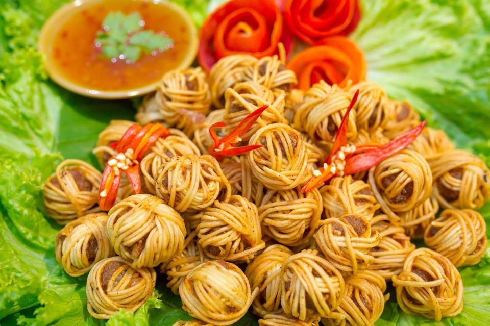

๑. ไข่พะโล้
วัตถุดิบ
- ไข่ไก่ 6 ฟอง
- เต้าหู้แข็งหั่นสามเหลี่ยม 8 ชิ้น
- หมูสามชั้น 300 กรัม
- รากผักชี 3 ราก
- กระเทียมไทย 5 กลีบ
- พริกไทย 1/2 ช้อนโต๊ะ
- น้ำตาลปี๊บ 1/4 ถ้วยตวง
- เกลือ 1/2 ช้อนชา
- น้ำมันพืช 1 ช้อนโต๊ะ
- อบเชย 3 ก้าน
- โป๊ยกั๊ก 5 ดอก
- น้ำเปล่า 3 ถ้วยตวง
- ผักชี สำหรับตกแต่ง
วิธีทำ
- นำหม้อใส่น้ำให้พอท่วมไข่ขึ้นตั้งบนเตาแก๊ส ใส่เกลือลงไปเล็กน้อย ตามด้วยไข่ที่ทิ้งไว้ในอุณหภูมิปกติ นำมาต้มโดยใช้ไฟแรงเป็นเวลา 10 นาที เมื่อครบเวลาแล้วนำไข่มาแช่ในน้ำเย็นเพื่อหยุดความร้อน เมื่อไข่เย็นตัวลงให้ปอกเปลือกพักไว้
- นำรากผักชี กระเทียม พริกไทยใส่ลงในครกแล้วโขลกให้ละเอียด เพื่อนำไปผัดกับน้ำมัน
เคล็ดลับ : รากผักชี กระเทียม พริกไทยที่โขลกแล้วเรียกว่า “สามเกลอ” ซึ่งสามเกลอจะช่วยเพิ่มกลิ่นและรสชาติให้กับเมนูไข่พะโล้ของเรา
- ตั้งหม้อบนเตาแก๊สเปิดไฟโดยใช้ไฟปานกลาง จากนั้นใส่น้ำมันพืชลงไป เมื่อน้ำมันร้อนให้ใส่สามเกลอที่เตรียมไว้ลงไปผัดจนหอม แล้วใส่น้ำตาลปิ๊บลงไปผัดและเคี่ยวจนน้ำตาลสีเข้มจัดด้วยไฟปานกลาง ซึ่งสีเข้มของพะโล้ก็จะได้จากสีน้ำตาลนี้นั่นเอง คอยคนไม่ให้น้ำตาลไหม้ เมื่อน้ำตาลเคี่ยวได้ที่และเปลี่ยนสีเข้มขึ้นให้ใส่หมูสามชั้นลงไปผัดเล็กน้อย
- ใส่น้ำเปล่าลงไปในหม้อ ตามด้วยโป๊ยกั๊กและอบเชย ต่อด้วยการใส่ไข่ไก่ที่ปอกเปลือกและเต้าหู้แข็งหั่นสามเหลี่ยม จากนั้นปรุงรสด้วยเกลือและเคี่ยวต่อเป็นเวลา 50 นาที
- เมื่อครบเวลาแล้วตักพะโล้ใส่ลงในถ้วย ตกแต่งด้วยผักชี
หมายเหตุ: นักทำอาหารยุคใหม่สามารถใช้ “รสดีเมนู” พะโล้ แทนได้ ช่วยให้การทำไข่พะโล้เป็นเรื่องง่าย ไม่ต้องเตรียมเครื่องปรุงและเครื่องเทศเยอะ แถมยังประหยัดเวลาเพราะจะสามารถลดเวลาในการเคี่ยวได้เป็นเหลือเพียง 30 นาทีเท่านั้น
๒. แสร้งว่ากุ้ง
แสร้งว่ากุ้ง อาหารไทยโบราณที่ทำได้ง่ายๆ ใช้กุ้งสุกมาคลุกเคล้ากับผักและสมุนไพรต่างๆ ปรุงรสเปรี้ยว เค็ม หวาน คล้ายกับยำแต่ไม่มีรสเผ็ด
ส่วนผสม
- กุ้งใหญ่ 4 ตัว
- ขิงซอย 2 ช้อนโต๊ะ
- หอมแดงซอย 2 ช้อนโต๊ะ
- ต้นหอมซอย 2 ช้อนโต๊ะ
- ผักชีซอย 2 ช้อนโต๊ะ
- ตะไคร้ซอย 2 ช้อนโต๊ะ
- ใบมะกรูดซอย 1 ช้อนโต๊ะ
- มะขามเปียก 2 ช้อนโต๊ะ
- น้ำมะนาว 2 ช้อนโต๊ะ
- น้ำตาล 2 ช้อนโต๊ะ
- น้ำปลา 1 1/2 ช้อนโต๊ะ
วิธีทำ
- นำกุ้งไปลวกให้สุก จากนั้น หั่นเฉียงเป็นชิ้นๆ
- อ่างผสมใส่น้ำมะขามเปียก น้ำมะกรูด น้ำตาล น้ำปลา คนส่วนผสมให้เข้ากัน
- ใส่กุ้ง ขิง หอมแดง ต้นหอม ผักชี ตะไคร้ ใบมะกรูด เคล้าเบาๆ ให้เข้ากัน ใส่จานเสริฟ
๓. หมูโสร่ง

เป็นอาหารว่างหน้าตาคล้ายลูกตะกร้อ วิธีทำนั้นไม่ยุ่งยากเท่าไรนัก แต่ต้องอาศัยความใจเย็นเพราะต้องมีความพิถีพิถันในการนำหมี่ซั่วลวกพันรอบหมูสับปรุงรสที่ปั้นเป็นก้อน
ส่วนผสม
- เนื้อหมูบดละเอียด 200 กรัม
- รากผักชีโขลกละเอียด 2 ช้อนชา
- กระเทียมโขลกละเอียด 2 ช้อนชา
- พริกไทยป่น 1/2 ช้อนชา
- เกลือ 1/4 ช้อนชา
- น้ำปลา 1 ช้อนโต๊ะ
- ไข่ไก่ 1 ฟอง
- น้ำมันสำหรับทอด 3 ถ้วย
- เส้นหมี่ซั่วขาว 100 กรัม
วิธีทำ
- นำหมูที่บดไว้ใส่ภาชนะ ตามด้วยรากผักชี กระเทียม น้ำปลา เกลือ และพริกไทยป่น นวดให้เข้ากัน
- เมื่อเข้ากันประมาณหนึ่งแล้ว ตอกไข่ลงไปแล้วนวดอีกครั้ง ไข่จะช่วยให้เนื้อหมูมีความหนืดและเหนียวนุ่ม
- เมื่อเนื้อหมูมีความหนืดมือแล้ว ปั้นเป็นลูกกลมแบบพอดีคำจากนั้นหยิบเส้นหมี่ซั่วที่ลวกแล้วผึ่งในตะแกรงประมาณ 3-4 เส้น
- นำมาพันหมูที่เราปั้นไว้ให้เป็นก้อนกลมเหมือนลูกตะกร้อ ทำแบบนี้ไปเรื่อยๆ จนหมดวางใส่ถาดแล้วนำผ้าขาวบางมาคลุมไว้ ตั้งกระทะ ใช้ไฟอ่อนหรือกลาง ใส่น้ำมันนำก้อนหมูที่พันแล้วไปทอดในกระทะ ทิ้งไว้ในกระทะสักพัก จนเปลี่ยนเป็นสีน้ำตาลทองเมื่อสุกแล้วตักขึ้นสะเด็ดน้ำมัน เสิร์ฟคู่กับน้ำจิ้มพร้อมลิ้มรส
๔. หรุ่ม
หรุ่ม เป็นอาหารว่างไทยโบราณปรากฏชื่อในกาพย์เห่ชมเครื่องคาวหวานในรัชกาลที่ 2 ใช้ไข่ทำเป็นแผ่นบางสำหรับห่อไส้ ด้วยรสชาติกลมกล่อม ทานง่าย เมนูนี้จึงเหมาะทั้งสำหรับเด็กและผู้ใหญ่
ส่วนผสม
- หมูสับละเอียด 1 ถ้วยตวง
- กุ้งสับละเอียด 1/2 ถ้วยตวง
- หอมใหญ่สับเป็นสี่เหลี่ยมลูกเต๋า 1/4 ถ้วยตวง
- พริกชี้ฟ้าแดงหั่นฝอย 3 เม็ด
- ผักชีเด็ดเอาแต่ใบ 1/4 ถ้วยตวง
- ถั่วลิสงคั่วบุบ 1/4 ถ้วยตวง
- น้ำปลา 3 ช้อนโต๊ะ
- พริกไทย 5-8 เม็ด
- กระเทียม 4 กลีบ
- น้ำตาล 3 ช้อนโต๊ะ
- รากผักชี 1 ราก
- ไข่เป็ดตีให้เข้ากัน 5 ฟอง
วิธีทำ
- โขลกรากผักชี กระเทียมและพริกไทย ให้ละเอียด ตักขึ้นมาพักไว้
- ตั้งน้ำมันในกระทะบนไฟร้อนปานกลาง แล้วเอาส่วนผสมที่โขลกเตรียมไว้ลงไปผัดจนหอม
- จากนั้นใส่หมู กุ้งและหอมใหญ่ลงผัดให้สุก ปรุงรสด้วยน้ำปลา น้ำตาล ถั่วลิสง ผัดจนแห้ง จึงปิดไฟ
- ตั้งกระทะบนไฟร้อนปานกลาง ทาน้ำมันให้ทั่วก้นกระทะ พอกระทะร้อน
- ใช้มือจุ่มไข่และสะบัดให้เป็นตารางขนาดใหญ่พอห่อได้ 1 คำ
- พอไข่สุกค่อยๆ แคะขึ้นมาวางพักไว้บนจาน ทำเช่นนี้จนไข่หมด
- การห่อ นำแผ่นไข่ที่ทำไว้วางบนพื้นเรียบสะอาด จากนั้นวางพริกแดงและผักชีลงที่กลางแผ่นไข่
- ตักไส้พอคำวางทับพริกและผักชี พับห่อให้เป็นรูปสี่เหลียม ห่อจนหมด
- จัดใส่จาน ตกแต่งหน้าด้วยใบผักชี เสิร์ฟพร้อมข้าวสวยร้อนๆ หรือเป็นของว่างทานเล่นก็ได้ค่ะ